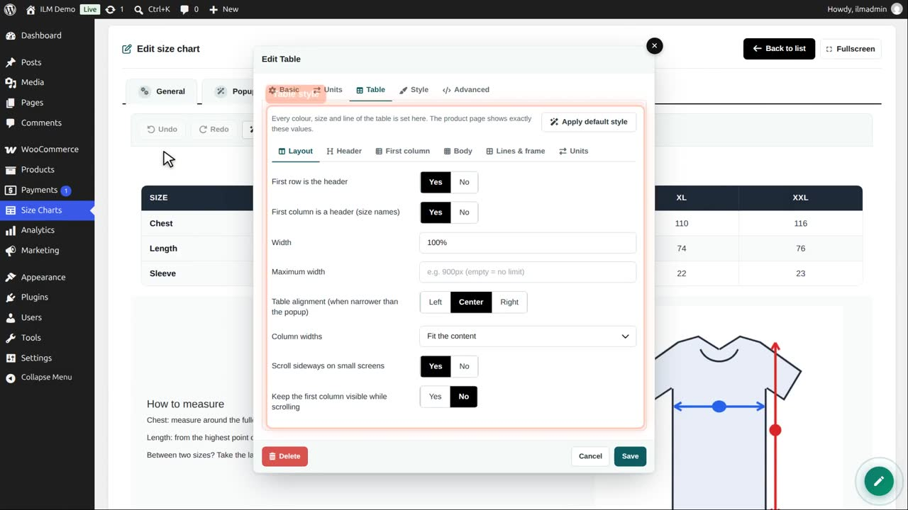
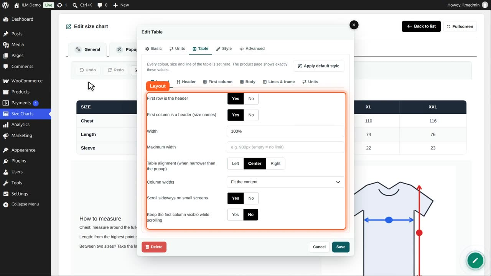
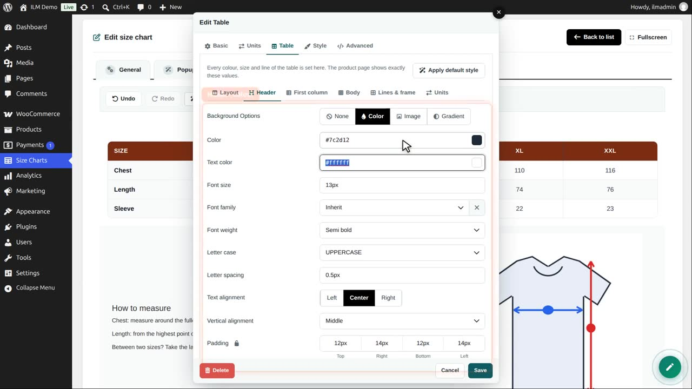
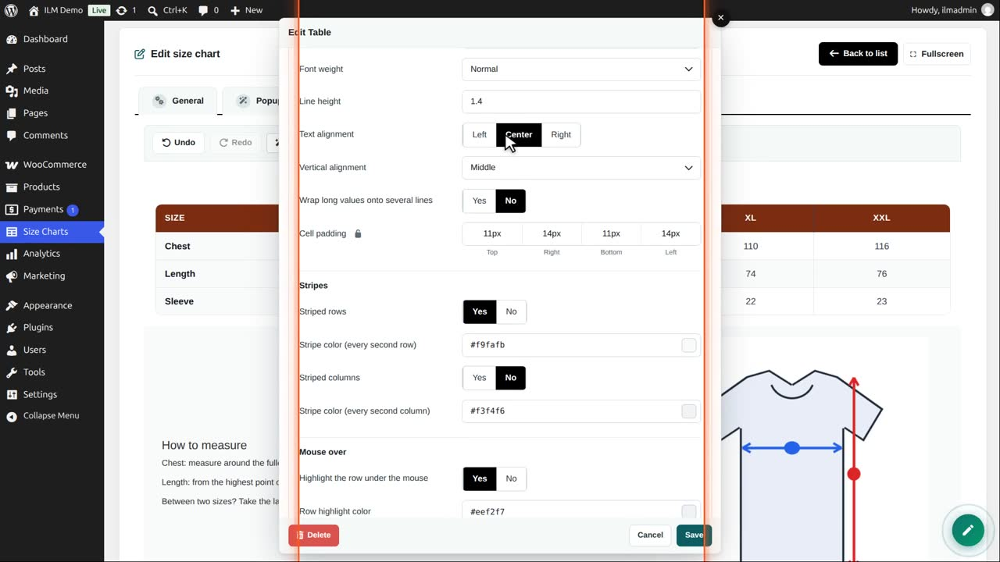
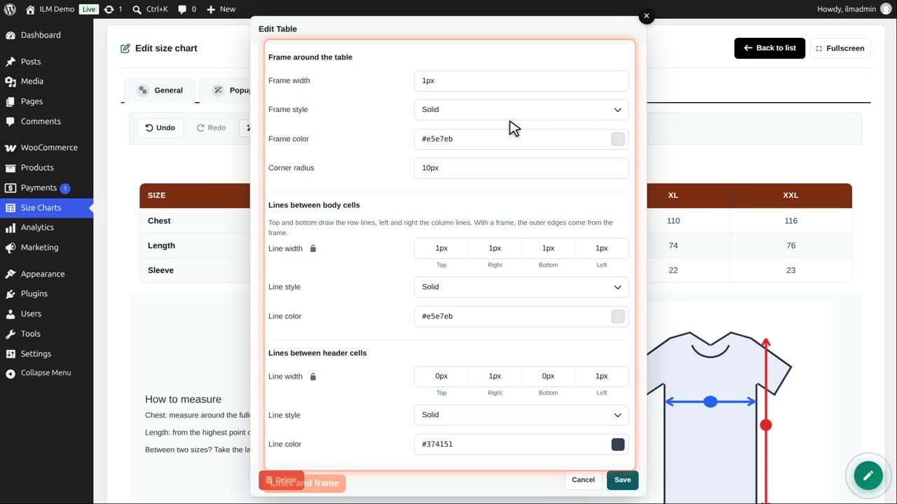
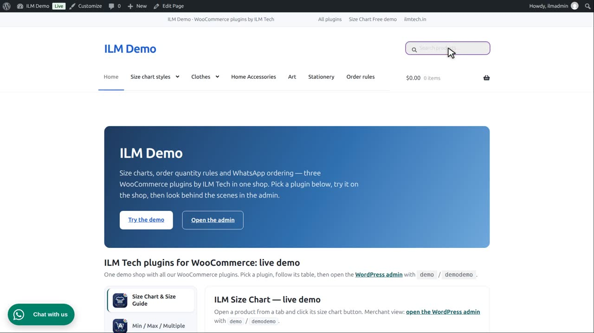
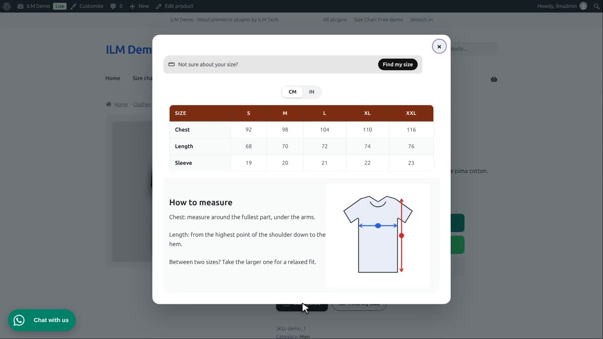

Click a component to edit it. Every component has a Style tab (spacing, background, border, shadow) and an Advanced tab (your own ID, class and CSS).
Edit the chart, click the table, and open the Table tab. Its own tabs set the layout, the header, the first column, the body, the lines and the unit buttons.

Layout: header row and first column on or off, the width, the alignment, and a scroll bar for wide tables on phones.

Header: we give the header row a dark orange background. Text colour, font size and spacing are here too.

Body sets the colours of the rows, stripes on every second row, and the colour when the mouse is over a row.

Lines and frame: the border around the table and the lines between the cells.

Save the editor: the designer shows the new header at once. Apply default style, on the Table tab, puts the original look back.

Save the chart, and the shop shows the same table.

For a ready-made look in one click, use Themes. It has its own video.